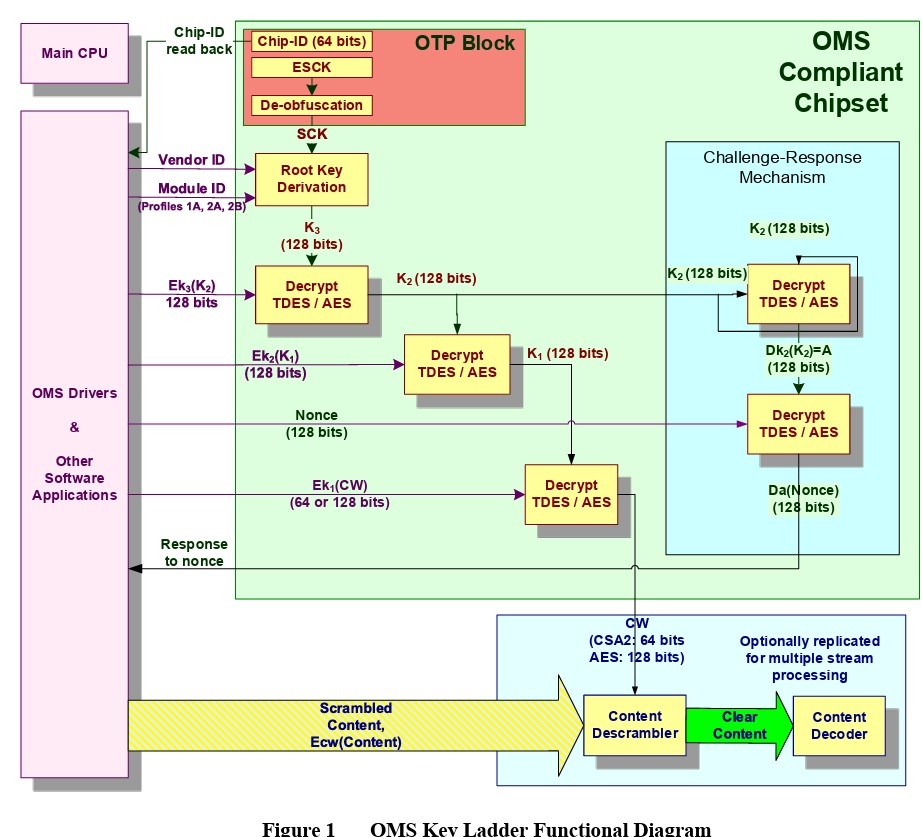
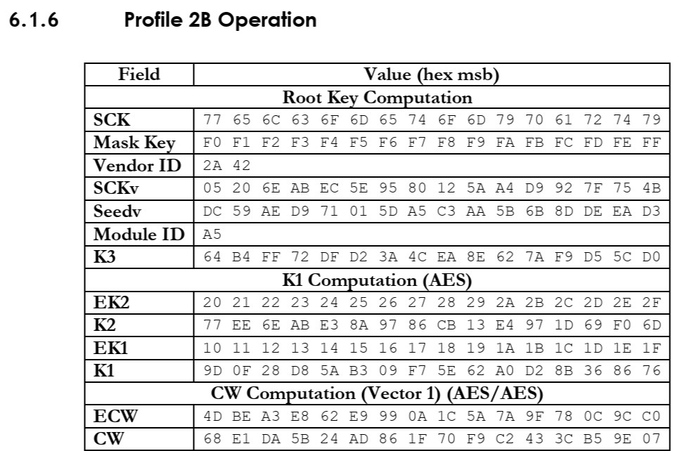

0x 加密測試台
所有輸入與輸出皆為 16 進位（可含空白、冒號、0x 前綴）。運算全部在瀏覽器本機完成。
參數
結果
就緒
金鑰 （私鑰只需 n、e、d，其餘會自動推算）
加密 / 解密
就緒
簽章 / 驗證
就緒
甲方金鑰
乙方金鑰
ECDH 共享密鑰 （輸出為共享點的 X 座標）
就緒
公鑰格式
金鑰與訊息
簽章
就緒
輸入
結果
就緒
輸入
結果
就緒
輸入（HKDF，HMAC-SHA256，RFC 5869）
結果
就緒
下方流程圖對應這次的實際數值；滑鼠停在方塊上可看完整 hex。
流程圖與每一輪的值
| i | HMAC 輸入 = T(i−1) || info || i | T(i) = HMAC-SHA256(PRK, 輸入) |
|---|
輸入 （皆為 128-bit，AES-128-ECB）
結果 （D(k, c) = AES-128-ECB 以 k 解密 c）
就緒
參考圖 （圖檔位於 KeyLadder/，需與網頁放在同一層資料夾）



MPEG-2 TS 封包解析 （ISO/IEC 13818-1，188 bytes，每格 8 bits，以 16 進位填寫）
188 個格子 （點格子或直接輸入，右邊對應的欄位會發亮；方向鍵可移動）
解析結果 （滑過欄位，左邊對應的格子會發亮）
| 格子 | 欄位 / 說明 | bits | 值 / 解讀 |
|---|
文字 ⇄ Hex（UTF-8）
Base64 ⇄ Hex
就緒
隨機位元組
XOR
上傳檔案給站長
尚未選擇檔案
檔案清單 （SHA-256 在你的電腦上計算，伺服器收到後會再核對一次）
選擇的檔案會列在這裡。
作者訊息
開發選項
開啟後左側會多出三個項目
轉換舊密碼的資料
這個瀏覽器裡有用舊密碼加密的資料（）。輸入舊密碼一次，會改用新密碼重新加密，之後就不再需要舊密碼。
雲端同步 未設定
同步 Script、待辦事項、財務紀錄、我獨自升級、日文學習進度、自選股、Fugle 金鑰等。資料先在瀏覽器裡加密才上傳到你自己的 Google Drive，Drive 上只有密文。
尚未設定
Script 紀錄區
內容用你的密碼加密（PBKDF2 + AES-GCM）後保存在這個瀏覽器；密碼本身不會存在網頁裡。
需要密碼
輸入密碼後才能查看與編輯 script
左邊選一筆 script，或按「新增」。
就緒
待辦事項
點箭頭展開備註和子項目；在項目上按 Enter 新增下一項。資料保存在這個瀏覽器。
資料來源：FinMind 開放資料（K 線、三大法人、資券、外資持股、基本面）、鉅亨網（即時報價）、證交所（法人排行）。免金鑰。
每日三大法人買賣超（張）
月營收
股利政策
大盤指數
載入中…勾選最多 6 個要顯示的指數（存在這個瀏覽器）：
滑鼠移到圖上看數值。
資料來源：鉅亨網公開行情（不需金鑰，可能有延遲）。開著這個頁面時每 30 秒自動更新。
三大法人整體買賣超（上市 + 上櫃，億元）
整體融資融券
上市股票（證交所 T86 三大法人買賣超日報），單位：張。點一列可以直接看該檔個股。
台股策略回測：2560 / MACD / KD
用 Fugle 免費版抓日 K，回測最近 2 年，並依最新收盤判斷策略目前是買進、賣出、續抱還是觀望。這是規則算出來的訊號，不是投資建議。
輸入股票代號後按「回測」。還沒有金鑰的話，可以先用模擬資料看看功能。
策略參數（改了會立即重算）
交易成本：手續費 0.1425%（可打折）× 2 + 證交稅 0.3%。訊號以收盤判斷，下一個交易日開盤成交。
K 線、成交量與指標 （虛線右邊是回測區間）
交易明細
| 進場日 | 進場價 | 出場日 | 出場價 | 報酬（含成本） | 持有天數 | 出場原因 |
|---|
批次回測自選股
Fugle 免費版每分鐘 60 次，每檔需要 3 次，系統會自動放慢速度。
| 代號 | 目前判斷 | 勝率 | 交易數 | 策略報酬 | 買進持有 | 最大回撤 |
|---|
回測使用過去資料，不代表未來表現；也沒有考慮滑價、漲跌停買不到等狀況。實際買賣請自行判斷。
財務紀錄
以開發選項的密碼加密後保存在這個瀏覽器。
新增一筆
輸入金額後按 Enter 也能記錄
月份總覽
近 6 個月 收入支出
本月支出分類
本月明細
| 日期 | 分類 | 備註 | 金額 |
|---|
我獨自升級
每天完成自己設定的任務來累積經驗值。每項任務 +10 XP，當天全部完成再 +30 XP。
【每日任務完成】獎勵 +30 XP
最近 30 天 （點格子看那一天）
各任務達成率 （長條為 30 天）
日本滑雪場地圖
先收錄長野縣白馬 Hakuba Valley 的 10 個雪場。點圖釘或右側清單看雪場資料，再按「3D 卡通俯瞰」從空中看整座雪山。
地圖載入中…
白馬 10 大雪場（由北到南）
拖曳旋轉、雙指或滾輪縮放、右鍵拖曳平移。山的形狀來自真實地形（高度放大 1.5 倍），樹、雲、纜車車廂是卡通裝飾。
雪場數據來自 Hakuba Valley 官方網站；交通時間為大約值，出發前請以各雪場與接駁巴士最新公告為準。地圖是示意圖，山峰、湖泊、鐵路位置為大致位置。3D 地形：AWS Terrain Tiles；雪道與纜車：© OpenStreetMap。
日文學習書
選擇等級，展開單字與文法。勾選代表已學會，進度會保存在這個瀏覽器。
單字
文法
JLPT 官方自 2010 年起不公布單字與文法清單，這裡的分級參考常見教材整理，僅供學習參考。等級說明摘自 jlpt.jp。
越南文學習
以胡志明市（西貢）的南部口語為主，分 A1–C2 六級。勾選代表已學會，進度會跟著雲端同步。
常用口語
句型
分級對應越南教育部《外國人越南語能力框架》（Thông tư 17/2015/TT-BGDĐT），內容為參考整理。